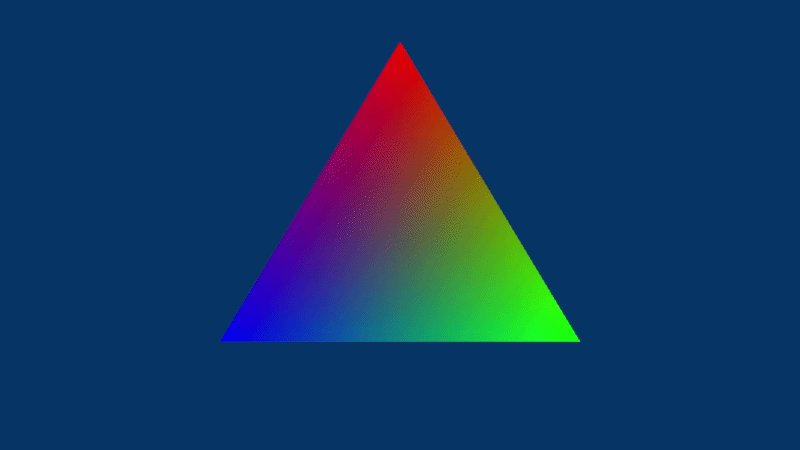

GIF slot
gifs/engine-rendering.gif
01
Rendering Foundation
I built the base rendering path from primitives up: vertex buffers, index buffers, camera transforms, depth buffering, textured meshes, and reusable render objects.
- Created vertex and index buffers for simple primitives.
- Added camera and matrix transforms so objects could move through 3D space.
- Implemented depth buffering so objects render correctly in front of and behind each other.
- Loaded texture data and passed texture coordinates into shaders.
- Wrapped repeated rendering setup into reusable helper classes.
Rendering
Textures
3D